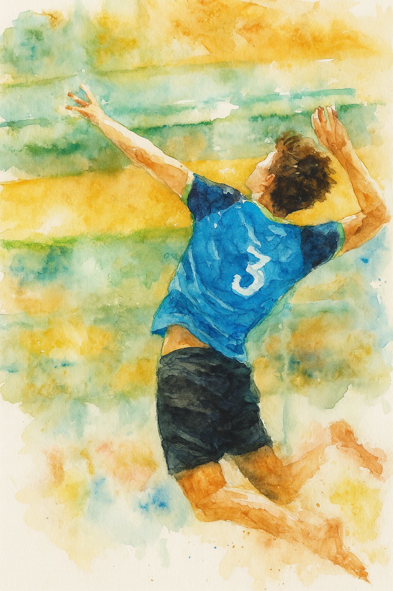

- Sep De Wulf
- Molendamstraat 11 Ouwegem
- 0467031757
- r1103301@student.vives.be

- Volleybal
--> Dit is een ploegsport dat je met 6 spelers doet waarbij je de bal
moet overspelen en de bal mag de grond niet raken
- Tennis
--> dit is een sport waarbij je de bal over een gespannen net moet spelen dat
in het midden van het terein hangt zonder dat de bal twee keer op uw
veld botst
- Fitness
--> dit is een hobby waarbij ik 3 keer in de week naar een plek ga waar er
allemaal machines zijn waardoor ik mijn spieren kan trainen om zo hoger te
kunnen springen in de volleybal nog sneller ben en harder kan aanvallen en
dus u spieren gaat trainen aan de hand van allerei apperatuur